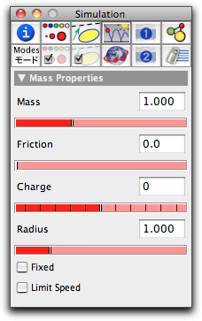
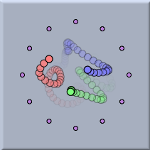
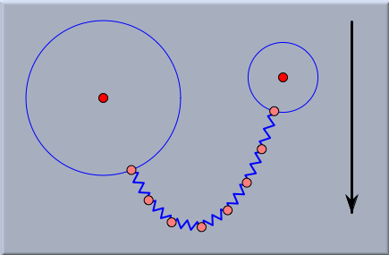

Free Mass
Adding a free mass particle is similar to adding a free geometric point. The only difference is that mass particles have to be added with free mass mode, while free points are added with
Add a Point mode.
Without the presence of forces or velocities, a free mass appears to be no different from a geometric point. (There is only a very tiny difference between free masses and geometric points, since by default masses are drawn in a slightly brighter color, so that one can easily recognize them in a drawing.)
As soon as a physical object (for instance, a mass) is added, an animation control panel appears in the geometric view. Unless the play button is selected, masses behave like geometric points. Pressing the play button starts the physics simulation. If a
Velocity was assigned to the mass, the mass will start moving automatically. If the mass is influenced by forces (say from a
Spring or from
Gravity), the velocity of the mass will change according to the force while the mass is moving. The change of velocity per time unit is called
acceleration. The acceleration of a mass in response to a force is governed by the equation
|
acceleration = force / mass
|
Here
force is the vector sum of all forces that act on the mass.
Inspecting Masses
The basic properties of a mass can be set and changed using the physics tab (this is the fourth tab in the top row) of the
Inspector. The physics inspector for a generic mass looks as follows:
 |
| The mass inspector |
The meaning of the different entries is as follows:
- Mass: This is the value of the physical mass of the object. According to the formula acceleration = force/mass the acceleration of a particle is larger for smaller masses if the force is constant. This can be considered as the central law of inertia. (Thus with the same force it is much easier to push a tennis ball than a car.) On the other hand, the mass also influences the gravitational force that affects a particle. A gravitational force is proportional to the mass of an object. (Thus heavy objects are more influenced by gravity than light objects. The gravitational force on a tennis ball is much smaller than that on a car.). For instance, in free fall, both of the above effects cancel out exactly, so that in a field of constant gravity a car falls exactly as fast as a tennis ball.
- Friction: In a usual environment on Earth, a ball that is rolling over a plane horizontal surface will come to rest at some time. The reason for this is friction. In principle, friction can be seen as a force that acts in the opposite direction to that of the motion. This force causes moving objects to slow down over time. For most physical simulations that model situations of everyday life on Earth, it is reasonable to assume that masses are subject to some friction. In contrast, if one models the movement of planets or electrons, it is generally realistic to assume that no friction is present. By default, the friction affecting masses is set to zero. It is also possible to set a global friction value, which is then applied to all masses, in the Environment inspector.
- Charge: Electromagnetic forces (Coulomb force and Lorentz force) act only on electrically charged particles. The charge slider allows one to set the charge to a specific value. Charges can be either positive or negative. Positive and negative charges attract each other, while like charges repel each other. The charge of a particle will be relevant only if either the particle is involved in a (Coulomb) interaction or the "charges cause forces" box in the Environment is checked. By default, the charge of a mass is set to zero.
- Radius: Usually, CindyLab assumes that particles are pointlike objects. However, if the "masses are balls" box in the Environment is checked, particles will behave like objects with a nonzero diameter, which repel each other when they hit. This slider adjusts the radius of a particle. By default, the radius is set to 1.0.
- Fixed: Usually, masses are free to move move around. However, if this box is checked, the mass will not be moved by the physics simulation engine. It is important to know that if this box is checked, the mass may still cause gravitational or electrostatic forces. The following picture shows the movement of three charged particles in a cage of several other similarly charged particles. The outer particles are fixed so that they cannot move.
 |
Three charged particles in a cage
of fixed charged particles |
It is important to notice that unlike "pinned" points, a "fixed" point is still movable by a mouse action.
- Limit speed: This button puts a limiting value on the speed of a particle. Although this behavior is not physically motivated (aside from the absolute limit of the speed of light), checking this box sometimes helps to avoid numerical problems in simulations.
Masses and Geometry
Like any other geometric point, masses can be bound to lines, segments, or circles. In such a case,
CindyLab simulates the behavior as if the mass points were attached to frictionless tracks corresponding to the line, segment, or circle. The following picture shows the state of equilibrium of a chain of springs under the influence of gravity, where the endpoints of the springs are attached to two circles:
 |
| A chain of springs connected to circles |
Masses and CindyScript
Like any
CindyLab object, a mass point provides several fields that can be read and generally set by
CindyScript. The following list shows the accessible fields for masses:
| Name | Writeable | Type | Purpose
|
vx | yes | real | x-component of velocity
|
vy | yes | real | y-component of velocity
|
v | yes | 2-vector | velocity as a vector
|
fx | no | real | x-component of force
|
fy | no | real | y-component of force
|
f | no | 2-vector | force as a vector
|
kinetic | no | real | the kinetic energy of the point
|
ke | no | real | the kinetic energy of the point
|
mass | yes | real | the mass of the point
|
friction | yes | real | the friction of the point
|
charge | yes | integer | the charge of the point
|
radius | yes | real | the radius of the point
|
simulate | yes | bool | turn on/off simulation for this point
|